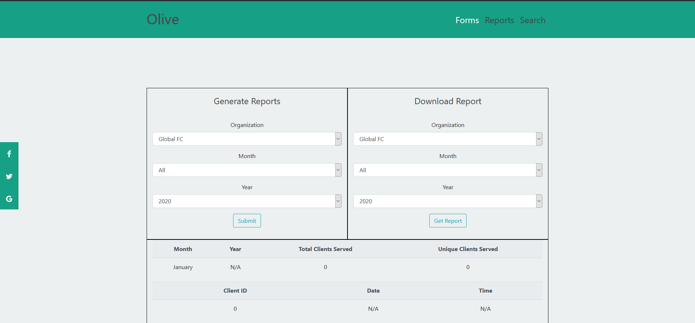

My Most Noteworthy Projects
Olive
Olive is an open source project designed with nonprofits in mind. The application is very simple, allowing users to create organizations, check how many clients are being served at any given time, and pull information on clients served as needed.
In the forms section, users can create organizations, create new clients, and allocate what information users want to collect on any given client. Typically, this means users can decide what they want to collect on users such as name, email, phone, and so on.
In the reports section, users can generate reports to fill out tables in the application, or users can choose to download json or csv files of the query results.
The big downside is that each nonprofit will need to deploy their own version of it on the web. Typically deployment will cost around $5+ a month depending on amount of users.
Check it outCricket's Adventure
Cricket's adventure is a 2-D Platformer where you play as a cat, Cricket, whose goal is to get into a box while projectiles are flying at him.
The art style was never optimized but it runs great after testing on a few different computers.
#